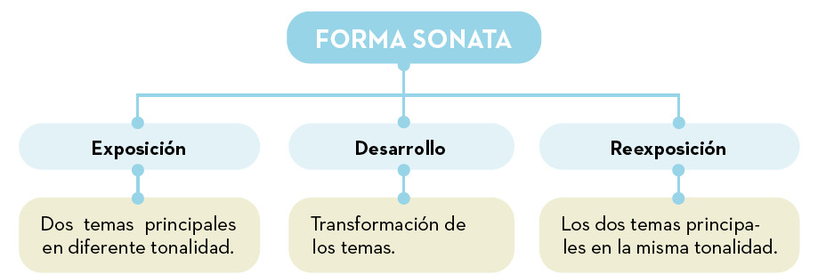
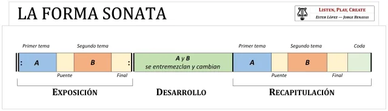

La Sonata
En la música instrumental del Clasicismo aparecen nuevos géneros que serán básicos para entender toda la música instrumental de periodos posteriores. Las formas más utilizadas son las siguientes:
- Sonata: composición para uno o dos instrumentos (a menudo con piano) en varios movimientos.
- Concierto: composición en la que un instrumento solista se enfrenta a la orquesta.
- Sinfonía es una obra a gran escala para orquesta completa, también con varios movimientos (normalmente IV).
- Música de cámara es música íntima para pequeños conjuntos (cuartetos, tríos, etc.), interpretada en salas pequeñas, ideal para pocos instrumentos.
La confusión con la sonata
Cuando hablamos de sonata suele existir mucha confusión. Debemos distinguir sonata y forma sonata.
- La sonata es una obra musical completa (un género) para uno o pocos instrumentos, usualmente con varios movimientos.
- La forma sonata es la estructura específica que se usa típicamente en el primer movimiento de esas sonatas, pero también en sinfonías, cuartetos y conciertos, y se caracteriza por sus secciones de exposición, desarrollo y recapitulación.


Es decir:
- Piensa en la Sonata como una novela de varios capítulos (la obra completa).
- La Forma Sonata es como la estructura de un capítulo específico dentro de esa novela (Exposición, Desarrollo, Recapitulación).
ESCUCHAMOS PERO NO JUZGAMOS: SONATA - CONCIERTO - SINFONÍA - MÚSICA DE CÁMARA
🎧 Audición 7 - Sonata
Mozart - Sonata para piano n.º 16 en do mayor
- ¿Al ser una sonata, cuántos instrumentos interpretan la pieza? ¿Qué instrumento es?
- Identifica las tres partes de la forma sonata. Puedes comprobar el resultado con el vídeo.
🎧 Audición 8 - Concierto
Mozart - Concierto para clarinete en la mayor. II. Adagio
- ¿Por qué sabemos que es un concierto?
- Los conciertos del Clasicismo suelen dividirse en tres movimientos. ¿Cuál suele ser el tempo de estos tres movimientos?
🎧 Audición 9 - Sinfonía
Mozart - Sinfonía n.º 40 en sol menor - I. Molto allegro
- ¿Qué diferencia fundamental hay entre esta sinfonía y un concierto?
- ¿Qué familia de instrumentos de la orquesta clásica es la encargada de llevar el peso melódico principal al inicio del primer movimiento de la Sinfonía n.º 40?
- ¿Qué forma utiliza esta obra? ¿Puedes indicar las tres partes? Comprueba el resultado con el vídeo.
🎧 Audición 10 - Música de cámara
J. Haydn - Cuarteto de cuerda en re menor - "El Emperador" - IV. Final
- ¿Por qué clasificamos esta obra como música de cámara y no como música sinfónica?
- ¿Qué tipo de agrupación de cámara (número y tipo de instrumentos) está tocando? Comprueba tu respuesta con el vídeo.